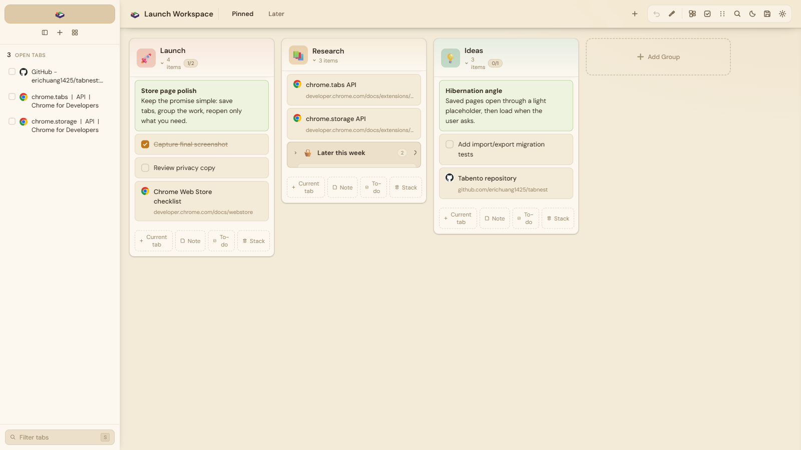

Free, source-available extension for Chrome and Edge
Your new tab, rebuilt as a local-first workspace.
Save tabs next to notes, todos, and reminders. Reopen them through hibernated placeholders that load only when you click, so fifty saved tabs cost almost no memory. No account. Nothing leaves your machine.
Not on the Chrome Web Store yet. Installs unpacked in about a minute.

What it does
Keep your context without carrying the weight.
Browser work piles up because it is unfinished. Tabento gives that pile a place to live, and gives you your memory back.
Save the mess
One click saves the current tab or every tab in the window. Right-click saves pages, links, selected text, and images. Bookmarks import. Ctrl+Shift+S works from anywhere.
Reopen only what matters
Saved pages open through a light placeholder and load the real site when you click it. Hibernation is on by default: a board of fifty saved tabs costs almost nothing until you need one.
Find anything later
Search by words, type, color, tag, domain, or todo state, and exclude what you don't want with a minus.
type:tab in:work domain:github.com -is:done
The workspace
One workspace, arranged your way
Tabs are only half of browser work. The other half is what you meant to do with them.
More than tabs
Notes sit beside the pages they refer to. Todos check off. Reminders fire, repeat on a schedule, and show up on a calendar. Stacks nest inside stacks when a project outgrows a card.
Five layouts
Board, list, canvas, explorer, and timeline show the same items in different shapes. Focus a single group when a board is too much. Nothing moves; only the view changes.
Your look
Fifteen themes, seven typefaces, three densities, adjustable column widths. The most-visited page in your browser should look like yours.
All fifteen, from rice paper and lacquer to Nord, Gruvbox, and Rosé Pine.
Built-in tools
Small tools, one workspace
Eight trackers are built in and open from the Tools hub. Each pops out as a floating mini-window you can drag anywhere. Use two of them, or none; they stay out of the way until asked.
Pomodoro
Timed focus sessions, next to the tabs you're working through.
Finance diary
Note spending as it happens and see where the month went.
Habits
Daily streaks you keep on a page you already open.
Water
One tap per glass. A small nudge that costs nothing.
Goals
Long-term targets with progress you can see.
Subscriptions
Recurring charges in one list, with alerts before renewals.
Reading
A log for finished books and a wishlist for the pile.
Workouts
Session logs without installing another app.
All eight ship with the extension today. Nothing here is a mockup.
Privacy
Nothing leaves your machine
A tab manager sees what you work on. That is exactly why Tabento is built so it cannot tell anyone.
No account
Nothing to sign up for. Open a new tab and it works.
No server
Data lives in chrome.storage.local on your device. There is no backend to breach.
No host permissions
Tabento cannot read or change the sites you visit. The manifest is one file; check it.
Portable data
Export everything as JSON. Imports show a preview before touching your data.
Blur for screen shares
One setting blurs the whole board when someone else can see your screen.
Source available
Research, contribution, and informal personal use only. No commercial use in any form.
Six browser permissions, each explained in the README.
Where Tabento is headed
Useful today, heading somewhere specific. None of this exists yet, and the page you are reading does not depend on it.
A plugin library
The eight tools are built in today. The plan is to rebuild them as plugins, so the workspace grows tool by tool and you add only what earns space.
A desktop companion
A desktop app that shares the same local-first data as the extension.
Automation you own
If Tabento ever talks to outside services, you bring your own API keys. No cloud account to rent.
Optional encrypted sync
Across devices, without giving up local-first defaults.
Install
Install in about a minute
Tabento is not on the Chrome Web Store yet. Until it is, it loads as an unpacked extension:
- Download or clone the repository from GitHub.
- Open
chrome://extensions(oredge://extensions) and turn on Developer mode. - Click "Load unpacked" and choose the tabento folder.
- Open a new tab. That's it.
Free for noncommercial research, contribution, and informal personal use. Chrome and Edge, Manifest V3.